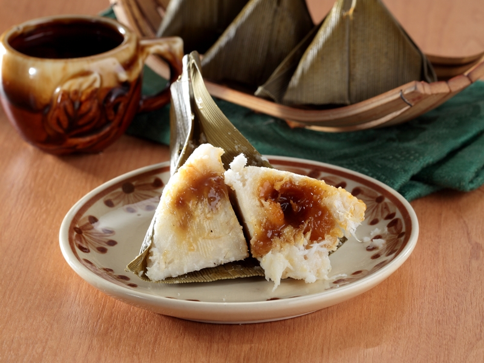

Panada

Koyabu is one of the traditional cakes originating from North Sulawesi. This food is made from glutinous rice which is ground and mixed with grated young coconut and palm sugar, then wrapped in pandan leaves and steamed so that it has a distinctive aroma.
Ingredients:
- 150 grams of half old grated coconut
- 100 grams of white glutinous rice flour
- 1/2 tsp salt
- 1/4 tsp vanilla powder
- enough brown sugar
- broad pandan leaves or banana leaves
Steps:
- Mix the glutinous rice flour, grated coconut and salt until smooth.
- Finely slice the brown sugar for the filling, set aside. Heat the leaves over the stove fire so that they wilt and are easy to shape.
- Heat the steamer.
- Take pandan leaves or banana leaves, lay out the coconut sticky rice dough, fill it with sufficiently thinly sliced brown sugar. Cover again with dough. do it to the end.
- Steam the koyabu until cooked or about 20-25 minutes. Pick up.